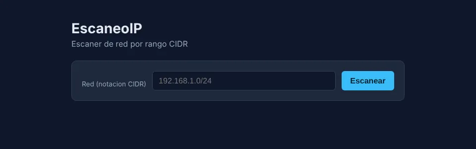

Escaneo IP
Ver el repo- Contexto
- Redes de Datos · ITSP
- Equipo
- 3 estudiantes
- Entrega
- 14/07/2026
- Stack
- Java · ExecutorService · ping y arp nativos · com.sun.net.httpserver · bash
- Repositorio
- github.com/lucioooofacc/EscaneoIP
- Descripción
- Un escáner que recibe una red en notación CIDR, hace ping a cada dirección en paralelo (hasta 100 hilos, 1 s de timeout) y cruza el resultado con la tabla ARP para mostrar IP, MAC y estado. Tiene un modo web con
POST /api/escaneary detecta si corre dentro de Flatpak para ejecutar los comandos en el sistema anfitrión.
$ ./ejecutar.sh Compilado en out/ Ingrese la red a escanear en notacion CIDR: 192.168.1.0/24 Escaneando 254 direcciones en 192.168.1.0/24... IP MAC Estado ----------------------------------------------- 192.168.1.1 a0:09:2e:••:••:•• Activo 192.168.1.2 5c:e9:31:••:••:•• Activo 192.168.1.4 Desconocida Activo 192.168.1.5 e8:94:f6:••:••:•• Activo 192.168.1.10 Desconocida Activo ----------------------------------------------- Equipos activos: 11 de 254 Tiempo de escaneo: 4 s

- Probado en
- IDE de Java, terminal Linux y el servidor de la institución
- Problema
- En Linux, la lectura de la tabla ARP fallaba; se resolvió con un script.